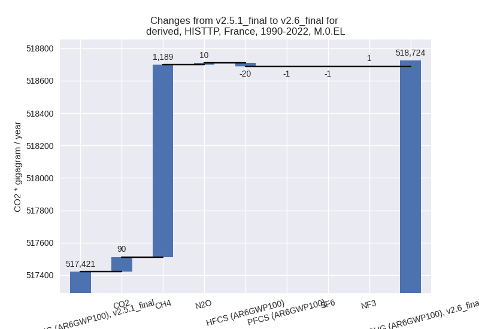

Changes in PRIMAP-hist v2.6_final compared to v2.5.1_final for France
2024-09-24
Johannes Gütschow
Change analysis for France for PRIMAP-hist v2.6_final compared to v2.5.1_final
Overview over emissions by sector and gas
The following figures show the aggregate national total emissions excluding LULUCF AR6GWP100 for the country reported priority scenario. The dotted linesshow the v2.5.1_final data.
The following figures show the aggregate national total emissions excluding LULUCF AR6GWP100 for the third party priority scenario. The dotted linesshow the v2.5.1_final data.
Overview over changes
In the country reported priority scenario we have the following changes for aggregate Kyoto GHG and national total emissions excluding LULUCF (M.0.EL):
- Emissions in 2022 have changed by -4.0%% (-16647.74 Gg CO2 / year)
- Emissions in 1990-2022 have changed by -1.2%% (-6328.81 Gg CO2 / year)
In the third party priority scenario we have the following changes for aggregate Kyoto GHG and national total emissions excluding LULUCF (M.0.EL):
- Emissions in 2022 have changed by -0.0%% (-152.99 Gg CO2 / year)
- Emissions in 1990-2022 have changed by 0.3%% (1303.57 Gg CO2 / year)
Most important changes per scenario and time frame
In the country reported priority scenario the following sector-gas combinations have the highest absolute impact on national total KyotoGHG (AR6GWP100) emissions in 2022 (top 5):
- 1: 1.A, CO2 with -11500.66 Gg CO2 / year (-4.1%)
- 2: 4, CH4 with -1582.25 Gg CO2 / year (-10.1%)
- 3: 2, CO2 with -1314.37 Gg CO2 / year (-4.5%)
- 4: 3.A, CH4 with -1025.35 Gg CO2 / year (-2.4%)
- 5: M.AG.ELV, N2O with -594.00 Gg CO2 / year (-3.0%)
In the country reported priority scenario the following sector-gas combinations have the highest absolute impact on national total KyotoGHG (AR6GWP100) emissions in 1990-2022 (top 5):
- 1: 1.A, CO2 with -5586.04 Gg CO2 / year (-1.6%)
- 2: 4, CH4 with -1839.78 Gg CO2 / year (-10.0%)
- 3: 2, CO2 with 545.65 Gg CO2 / year (1.5%)
- 4: 4, N2O with 320.74 Gg CO2 / year (46.6%)
- 5: 3.A, CH4 with -264.32 Gg CO2 / year (-0.6%)
In the third party priority scenario the following sector-gas combinations have the highest absolute impact on national total KyotoGHG (AR6GWP100) emissions in 2022 (top 5):
- 1: 1.A, CO2 with 1411.63 Gg CO2 / year (0.5%)
- 2: 2, HFCS (AR6GWP100) with -649.48 Gg CO2 / year (-5.2%)
- 3: 4, CH4 with -522.78 Gg CO2 / year (-2.5%)
- 4: 4, CO2 with -341.08 Gg CO2 / year (-15.6%)
- 5: 4, N2O with -34.67 Gg CO2 / year (-1.9%)
In the third party priority scenario the following sector-gas combinations have the highest absolute impact on national total KyotoGHG (AR6GWP100) emissions in 1990-2022 (top 5):
- 1: 4, CH4 with 1188.76 Gg CO2 / year (4.9%)
- 2: 1.A, CO2 with 130.60 Gg CO2 / year (0.0%)
- 3: 4, CO2 with -40.54 Gg CO2 / year (-2.2%)
- 4: 2, HFCS (AR6GWP100) with -19.68 Gg CO2 / year (-0.1%)
- 5: 4, N2O with 15.49 Gg CO2 / year (1.0%)
Notes on data changes
Here we list notes explaining important emissions changes for the country. ’' means that the following text only applies to the TP time series, while means that it only applies to the CR scenario. Otherwise the note applies to both scenarios.
- We have added EEA 2024 inventory data.
- Energy CO2 is lower in 2022 and cumulatively because EEA 2024 data is lower than CRF2023 TODO: this might be a reporting issue as we use EU data now and overseas territories might be excluded for EU and included for UNFCCC
- Lower waste CH4 emissions are due to lower emissions in EEA 2024 compared to CRF 2023. Waste N2O is much higher than in v2.5.1 also due to changes in country reported data.
- 2022 emissions (CR) for cement CO2 and livestock CH4 are lower due to updated 2022 growth rates (EEA2024 vs Andrew cement and EDGAR 8.0)
- NF3 data is much higher for 2022 because of a steep emissions increase not in line with longer term trends. (CR, TP)
- Changes in sector 4 in the TP scenario are due to the removal of FAOSTAT data.
Changes by sector and gas
For each scenario and time frame the changes are displayed for all individual sectors and all individual gases. In the sector plot we use aggregate Kyoto GHGs in AR6GWP100. In the gas plot we usenational total emissions without LULUCF. ## country reported scenario
2022
1990-2022
third party scenario
2022
1990-2022

Detailed changes for the scenarios:
country reported scenario (HISTCR):
Most important changes per time frame
For 2022 the following sector-gas combinations have the highest absolute impact on national total KyotoGHG (AR6GWP100) emissions in 2022 (top 5):
- 1: 1.A, CO2 with -11500.66 Gg CO2 / year (-4.1%)
- 2: 4, CH4 with -1582.25 Gg CO2 / year (-10.1%)
- 3: 2, CO2 with -1314.37 Gg CO2 / year (-4.5%)
- 4: 3.A, CH4 with -1025.35 Gg CO2 / year (-2.4%)
- 5: M.AG.ELV, N2O with -594.00 Gg CO2 / year (-3.0%)
For 1990-2022 the following sector-gas combinations have the highest absolute impact on national total KyotoGHG (AR6GWP100) emissions in 1990-2022 (top 5):
- 1: 1.A, CO2 with -5586.04 Gg CO2 / year (-1.6%)
- 2: 4, CH4 with -1839.78 Gg CO2 / year (-10.0%)
- 3: 2, CO2 with 545.65 Gg CO2 / year (1.5%)
- 4: 4, N2O with 320.74 Gg CO2 / year (46.6%)
- 5: 3.A, CH4 with -264.32 Gg CO2 / year (-0.6%)
Changes in the main sectors for aggregate KyotoGHG (AR6GWP100) are
- 1: Total sectoral emissions in 2022 are 276428.54
Gg CO2 / year which is 69.6% of M.0.EL emissions. 2022 Emissions have
changed by -4.0% (-11644.26 Gg CO2 /
year). 1990-2022 Emissions have changed by -1.6% (-5601.48 Gg CO2 / year). For 2022
the changes per gas
are:
The changes come from the following subsectors:- 1.A: Total sectoral emissions in 2022 are 273909.14
Gg CO2 / year which is 99.1% of category 1 emissions. 2022 Emissions
have changed by -4.2% (-11860.95 Gg
CO2 / year). 1990-2022 Emissions have changed by -1.6% (-5608.02 Gg CO2 / year). For 2022
the changes per gas
are:
There is no subsector information available in PRIMAP-hist. - 1.B.1: Total sectoral emissions in 2022 are 11.39
Gg CO2 / year which is 0.0% of category 1 emissions. 2022 Emissions have
changed by 29.5% (2.59 Gg CO2 /
year). 1990-2022 Emissions have changed by 0.0% (0.08 Gg CO2 / year). For 2022 the
changes per gas
are:
There is no subsector information available in PRIMAP-hist. - 1.B.2: Total sectoral emissions in 2022 are 2508.01
Gg CO2 / year which is 0.9% of category 1 emissions. 2022 Emissions have
changed by 9.3% (214.10 Gg CO2 /
year). 1990-2022 Emissions have changed by 0.1% (6.46 Gg CO2 / year). For 2022 the
changes per gas
are:
There is no subsector information available in PRIMAP-hist.
- 1.A: Total sectoral emissions in 2022 are 273909.14
Gg CO2 / year which is 99.1% of category 1 emissions. 2022 Emissions
have changed by -4.2% (-11860.95 Gg
CO2 / year). 1990-2022 Emissions have changed by -1.6% (-5608.02 Gg CO2 / year). For 2022
the changes per gas
are:
- 2: Total sectoral emissions in 2022 are 39889.43 Gg
CO2 / year which is 10.0% of M.0.EL emissions. 2022 Emissions have
changed by -4.6% (-1906.14 Gg CO2 /
year). 1990-2022 Emissions have changed by 1.4% (844.19 Gg CO2 / year). For 2022 the
changes per gas
are:
- M.AG: Total sectoral emissions in 2022 are 64116.39
Gg CO2 / year which is 16.2% of M.0.EL emissions. 2022 Emissions have
changed by -2.5% (-1666.74 Gg CO2 /
year). 1990-2022 Emissions have changed by -0.1% (-50.92 Gg CO2 / year). For 2022 the
changes per gas
are:
The changes come from the following subsectors:- 3.A: Total sectoral emissions in 2022 are 43012.14
Gg CO2 / year which is 67.1% of category M.AG emissions. 2022 Emissions
have changed by -2.5% (-1100.50 Gg
CO2 / year). 1990-2022 Emissions have changed by -0.6% (-280.51 Gg CO2 / year). For 2022
the changes per gas
are:

There is no subsector information available in PRIMAP-hist. - M.AG.ELV: Total sectoral emissions in 2022 are
21104.25 Gg CO2 / year which is 32.9% of category M.AG emissions. 2022
Emissions have changed by -2.6%
(-566.23 Gg CO2 / year). 1990-2022 Emissions have changed by 0.9% (229.59 Gg CO2 / year). For 2022 the
changes per gas
are:
There is no subsector information available in PRIMAP-hist.
- 3.A: Total sectoral emissions in 2022 are 43012.14
Gg CO2 / year which is 67.1% of category M.AG emissions. 2022 Emissions
have changed by -2.5% (-1100.50 Gg
CO2 / year). 1990-2022 Emissions have changed by -0.6% (-280.51 Gg CO2 / year). For 2022
the changes per gas
are:
- 4: Total sectoral emissions in 2022 are 16548.27 Gg
CO2 / year which is 4.2% of M.0.EL emissions. 2022 Emissions have
changed by -8.0% (-1430.61 Gg CO2 /
year). 1990-2022 Emissions have changed by -7.3% (-1520.60 Gg CO2 / year). For 2022
the changes per gas
are:
For 1990-2022 the changes per gas are: - 5: No data
third party scenario (HISTTP):
Most important changes per time frame
For 2022 the following sector-gas combinations have the highest absolute impact on national total KyotoGHG (AR6GWP100) emissions in 2022 (top 5):
- 1: 1.A, CO2 with 1411.63 Gg CO2 / year (0.5%)
- 2: 2, HFCS (AR6GWP100) with -649.48 Gg CO2 / year (-5.2%)
- 3: 4, CH4 with -522.78 Gg CO2 / year (-2.5%)
- 4: 4, CO2 with -341.08 Gg CO2 / year (-15.6%)
- 5: 4, N2O with -34.67 Gg CO2 / year (-1.9%)
For 1990-2022 the following sector-gas combinations have the highest absolute impact on national total KyotoGHG (AR6GWP100) emissions in 1990-2022 (top 5):
- 1: 4, CH4 with 1188.76 Gg CO2 / year (4.9%)
- 2: 1.A, CO2 with 130.60 Gg CO2 / year (0.0%)
- 3: 4, CO2 with -40.54 Gg CO2 / year (-2.2%)
- 4: 2, HFCS (AR6GWP100) with -19.68 Gg CO2 / year (-0.1%)
- 5: 4, N2O with 15.49 Gg CO2 / year (1.0%)
Changes in the main sectors for aggregate KyotoGHG (AR6GWP100) are
- 1: Total sectoral emissions in 2022 are 297197.75 Gg CO2 / year which is 70.0% of M.0.EL emissions. 2022 Emissions have changed by 0.5% (1411.63 Gg CO2 / year). 1990-2022 Emissions have changed by 0.0% (130.60 Gg CO2 / year).
- 2: Total sectoral emissions in 2022 are 30734.08 Gg
CO2 / year which is 7.2% of M.0.EL emissions. 2022 Emissions have
changed by -2.1% (-668.58 Gg CO2 /
year). 1990-2022 Emissions have changed by 0.0% (15.11 Gg CO2 / year). For 2022 the
changes per gas
are:
- M.AG: Total sectoral emissions in 2022 are 71896.26 Gg CO2 / year which is 16.9% of M.0.EL emissions. 2022 Emissions have changed by 0.0% (0.00 Gg CO2 / year). 1990-2022 Emissions have changed by 0.0% (0.00 Gg CO2 / year).
- 4: Total sectoral emissions in 2022 are 23879.63 Gg
CO2 / year which is 5.6% of M.0.EL emissions. 2022 Emissions have
changed by -3.6% (-898.53 Gg CO2 /
year). 1990-2022 Emissions have changed by 4.2% (1163.70 Gg CO2 / year). For 2022 the
changes per gas
are:
For 1990-2022 the changes per gas are: - 5: Total sectoral emissions in 2022 are 929.50 Gg CO2 / year which is 0.2% of M.0.EL emissions. 2022 Emissions have changed by 0.3% (2.50 Gg CO2 / year). 1990-2022 Emissions have changed by -0.4% (-5.84 Gg CO2 / year).